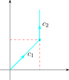
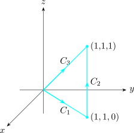

4.5 Line Integrals
Line integrals are integrals of functions along curves. We define them in the following way.
Suppose that \(f(x,y,z)\) is a function whose domain contains the curve \[\overline {r} = x(t)\textbf {i} + y(t) \textbf {j} + z(t)\textbf {k},\] \(a\leq t\leq b\), denoted by the \(C\), then, the line integral of \(f\) along the curve from \(t =a\) to \(t=b\) is given by \[\int _C f(x,y,z)\,dS,\hspace {0.8cm}(\text {the integral of}\hspace {0.3cm} f\hspace {0.3cm} \text {along}\hspace {0.3cm} C)\]
To evaluate the line integral we use the following theorem.
\(\displaystyle {\int _C f(x,y,z)dS = \int ^b_af\big [\overline {r}(t)\big ]\begin {vmatrix} \underline {V}(t)\\ \end {vmatrix}\,dt, }\)
\(\overline {r}(t) = x(t)\textbf {i} + y(t)\textbf {j} + z(t)\textbf {k}\) and \(\underline {V}(t)\) is the velocity vector of \(\overline {r}(t)\).
Proof
Recall that if \(S(t)\) is the length of \(C\) between \(\overline {r}(a)\) and \(\overline {r}(b)\), then \[\frac {dS}{dt} = \sqrt {\Bigg (\dfrac {dx}{dt}\Bigg )^2 + \Bigg (\dfrac {dy}{dt}\Bigg )^2 + \Bigg (\dfrac {dz}{dt}\Bigg )^2}\]
\[\implies \hspace {0.5cm} dS = \sqrt {\Bigg (\dfrac {dx}{dt}\Bigg )^2 + \Bigg (\dfrac {dy}{dt}\Bigg )^2 + \Bigg (\dfrac {dz}{dt}\Bigg )^2}\,dt\]
and \(S\) \[\int _C f(x,y,z)dS = \int ^b_a f[x(t),y(t),z(t)]\sqrt {\Bigg (\dfrac {dx}{dt}\Bigg )^2 + \Bigg (\dfrac {dy}{dt}\Bigg )^2 + \Bigg (\dfrac {dz}{dt}\Bigg )^2}\,dt\]
But \(\displaystyle {\sqrt {\Bigg (\dfrac {dx}{dt}\Bigg )^2 + \Bigg (\dfrac {dy}{dt}\Bigg )^2 + \Bigg (\dfrac {dz}{dt}\Bigg )^2} = \begin {vmatrix} \overline {r}(t)\\ \end {vmatrix} = \begin {vmatrix} \underline {V}(t)\\ \end {vmatrix}}\)
Hence the result.
Evaluate \(\displaystyle {\int _C (2 +x^2y)\,dS}\), where \(C\) is the upper half of the unit circle.
Solution.
We first need parametric for \(C\), i.e
\[x(t) = \cos (t)\hspace {0.5cm}, \hspace {1cm} y(t) = \sin (t)\hspace {0.5cm}, \hspace {1cm} 0\leq t \leq \pi \]
\(f(x,y) = 2 + x^2 y\)
\(\implies \hspace {0.5cm} f[x(t),y(t)] = 2 + \cos ^2(t)\sin (t).\)
\(\implies \hspace {0.5cm} f\big (\overline {r}(t)\big ) = 2 + \cos ^2(t)\sin (t)\), where
\[C: \overline {r}(t) = \cos t\textbf {i} + \sin t \textbf {j}\]
\begin {align*} \int _C f(x,y)\,dS & = \int ^b_af(x(t),y(t))\begin {vmatrix} \overline {r}'(t)\\ \end {vmatrix}\,dt\\ & = \int ^{\pi }_0 \big (2 + \cos ^2t\sin t\big )\begin {vmatrix} \overline {r}'(t)\\ \end {vmatrix}\,dt \end {align*}
\begin {align*} \overline {r}(t) & = \cos t \textbf {i} + \sin t \textbf {j}\\ \overline {r}'(t) & = -\sin t\textbf {i} + \cos t \textbf {j} \implies \begin {vmatrix} \overline {r}'(t)\\ \end {vmatrix}= \sqrt {\sin ^2 (t) + \cos ^2(t)}=1 \end {align*}
\begin {align*} \implies \hspace {0.5cm} \int _C f(x,y)\, dS & = \int _C \big (2 + x^2y\big )\, dS\\ & = \int ^{\pi }_0\big (2 + \cos ^2t\sin t\big ) 1 \,dt\\ & = 2\pi + \frac {2}{3}\\ \end {align*}
Now, suppose that \(C\) is a piecewise smooth curve, i.e \(C\) is a union of a finite number of smooth curves \(C_1,C_2,\cdots \cdots \cdots ,C_n\), where the initial point of \(C_{i+1}\) is the terminal point of \(C_j\). We define the integral of \(f\) along \(C\) as the sum of the integrals of \(f\) along each of the smooth pieces of \(C\). \[\int _C f(x,y,z)\,dS = \int _{C_1}f(x,y,z)\,dS + \int _{C_2}f(x,y,z)\,dS+\cdots \cdots \cdots + \int _{C_n}f(x,y,z)\,dS\]
- 1.
- Evaluate \(\displaystyle {\int _C2x\,dS}\) , where \(C\) consists of the arc \(C_1\) of the parabola \(y=x^2\) from \((0,0)\) to \((1,1)\) followed by the vertical
line segment \(C_2\) from \((1,1)\) to \((1,2)\).

- 2.
- The figure below shows two different paths from the origin to the point \((1,1,1)\). Integrate \(f(x,y,z) = x - 3y^2 + z\) along each
path

We seek \(\displaystyle {\int _{C_3}f(x,y,z)\,dS}\) and \(\displaystyle {\int _{C_1\cup C_2}f(x,y,z)\,dS}\)
\begin {align*} C_3 : \overline {r}_1 & = (1-t)\langle 0,0,0\rangle + t\langle 1,1,1\rangle \\ \implies \hspace {0.5cm} \overline {r}_1 & = t\textbf {i} + t\textbf {j} + t\textbf {k}\hspace {0.3cm} , \hspace {0.5cm} 0\leq t \leq 1 \end {align*}
\[\int _{C_3} f(x,y,z)\, dS = \int ^1_0f(\overline {r}_1(t))\begin {vmatrix} \overline {r}'_1(t)\\ \end {vmatrix}\,dt \]
\[f\big [\overline {r}_1(t)\big ]= t - 3t^2 + t = 2t - 3t^2\]
\[\overline {r}'_1(t) = \textbf {i} + \textbf {j} + \textbf {k}\implies \begin {vmatrix} \overline {r}'_1(t)\\ \end {vmatrix}=\sqrt {3} \]
\begin {align*} \text {Hence}\hspace {1cm} \int _{C_3} f(x,y,z)\,dS & = \int ^1_0 \big (2t-3t^2\big )\,dt\\\\ & = \Big [t^2-t^3\Big ]^1_0\\ & = 0\\ \end {align*}
\[C_1 = (1-t)\langle 0,0,0\rangle + t\langle 1,1,0\rangle \]
\[\overline {r}_2(t) = t\textbf {i} + t\textbf {j}\hspace {0.4cm}, \hspace {0.4cm} 0\leq t \leq 1\]
\[f\big (\overline {r}_2(t)\big ) = t - 3t^2\]
\[\overline {r}_2'(t) = \textbf {i} + \textbf {j} \implies \begin {vmatrix} \overline {r}'_2(t)\\ \end {vmatrix}= \sqrt {2}\\ \]
\begin {align*} C_2 : \hspace {0.5cm} \overline {r}_3 & = (1-t)\langle 1,1,0\rangle + t\langle 1,1,1\rangle \\\\ & = (1-t)\textbf {i} + (1-t)\textbf {j} + t\textbf {i} + t\textbf {j} + t\textbf {k}\\\\ \implies \hspace {1cm} \overline {r}_3(t) & = \textbf {i} + \textbf {j} + \textbf {k}\hspace {0.3cm} ,\hspace {0.5cm} 0\leq t\leq 1\hspace {1cm} x=1, y=1, z =t \end {align*}
\[\overline {r}'_3(t) = \textbf {k}\hspace {0.2cm},\hspace {0.5cm} \begin {vmatrix} \overline {r}'_3(t)\\ \end {vmatrix} = 1\hspace {0.2cm},\hspace {0.5cm} f\big [\overline {r}'_3(t)\big ] =-2 +t\]
\begin {align*} \int _{C_1\cup C_2}f(x,y,z)\,dS & = \int _{C_1}f(x,y,z)\,dS + \int _{C_2}f(x,y,z)\,dS\\\\ & = \int ^1_0 \big (t-3t^2\big )\big (\sqrt {2}\big )\,dt + \int ^1_0 \big (t-2\big )\,dt\\\\ & = -\frac {1}{2}\big (\sqrt {2}+3\big )\\\\ \end {align*}
Solution. Clearly, \(C = C_1 \cup C_2\)
\begin {align*} C_1 & : \text {Let}\hspace {0.5cm} x = t,\hspace {0.4cm} y = t^2\\ \implies & \overline {r}_1(t) = t\textbf {i} + t^2\textbf {j}\\ \implies & \overline {r}_1'(t) = \textbf {i} + 2t\textbf {j}\\ & 0\leq t \leq 1 \end {align*}
\begin {align*} C_2 & : \overline {r}_2(t) = (1-t)\overline {r}_0 + t\overline {r}_1,\hspace {0.5cm} 0\leq t\leq 1 \end {align*}
\begin {align*} C_2: \overline {r}_2(t) & = (1-t)\langle 1,1\rangle + t\langle 1,2\rangle , \hspace {0.5cm} 0\leq t \leq 1 \\ & = \textbf {i} + (1+t)\textbf {j}\\ \implies \hspace {1cm} \overline {r}'_2(t) & = \textbf {j} \end {align*}
\begin {align*} \int _C 2xdS & = \int _{C_1}2x\,dS + \int _{C_2}2x\,dS\\\\ & = \int ^1_0 2(t) \sqrt {1 + t^2} \,dt + \int ^1_0 2(1)\,dt\\\\ & = \frac {5\sqrt {2}-1}{6}+2\\ \end {align*}
Line Integrals With Respect to x, y and z
\[\int _C f(x,y,z)\,dx = \int ^b_a f\big [x(t),y(t),z(t)\big ]\, x'(t)\, dt\]
\[\int _C f(x,y,z)\,dy = \int ^b_a f\big [x(t),y(t),z(t)\big ]\, y'(t)\, dt\]
\[\int _C f(x,y,z)\,dz = \int ^b_a f\big [x(t),y(t),z(t)\big ] \,z'(t)\, dt\]
When the three integrals occur together we write. (if \(F = P\textbf {i} + Q\textbf {j} + R\textbf {k}\)) \[\int _C P(x,y,z)\,dx + \int _C Q(x,y,z)\,dy + \int _C R(x,y,z)\,dz = \int _C\big [P(x,y,z)\,dx + Q(x,y,z)\,dy + R(x,y,z)\,dz\big ]\]
Evaluate \(\displaystyle {\int _C (y^2\,dx + x\,dy)}\), where
- 1.
- \(C=C_1\) is the line segment from \((-5,-3)\) to \((0,2)\) and
- 2.
- \(C = C_2\) is the arc of the parabola \(x = 4-y^2\) from \((-5,-3)\) to \((0,2)\).
Solution.
- 1.
- \(C_1: \hspace {0.5cm} \overline {r}_1(t) = (-5 + 5t)\textbf {i} + (-3 + 5t) \textbf {j}\hspace {0.5cm} 0\leq t \leq 1\)
\[x(t) = -5 + 5t\hspace {0.3cm} , \hspace {0.5cm} y(t) = -3 + 5t\]
\begin {align*} \int _{C_1}( y^2\,dx + x\,dy )& = \int ^1_0 \big (-3 + 5t\big )^2 5\,dt + \big (-5 + 5t\big )5\, dt\\\\ & = 5 \int ^1_0 \big (25t^2 - 25t + 4\big ) \,dt\\\\ & = \frac {-5}{6}\\ \end {align*}
- 2.
- \(\displaystyle {\int _C (y^2\,dx + x\,dy) = \frac {245}{6}}\)
In general, a given parametrisation \[x = x(t)\hspace {0.2cm}, \hspace {0.5cm} y = y(t)\hspace {0.2cm} ,\hspace {0.5cm} z = z(t)\hspace {0.2cm} ,\hspace {0.5cm} a\leq t \leq b\] determines a orientation of the curve \(C\), with positive direction corresponding to increasing values of the parameter \(t\). If \(-C\) denotes the curve consisting of the same points as \(C\) but with opposite orientation, then we have:
\[\int _{-C} f(x,y,z)\,dx = -\int _C f(x,y,z)\,dx\]
\[\int _{-C} f(x,y,z)\,dy = -\int _C f(x,y,z)\,dy\]
\[\int _{-C} f(x,y,z)\,dz = -\int _C f(x,y,z)\,dz\]
But if we integrate with respect to arc length, the value of the line integral does not change when we reverse the orientation of the curve: \[\int _{-C}f(x,y,z)\,dS = \int _C f(x,y,z)\,dS\]
Questions on this section
Stuck on something here? Ask below and it stays attached to this topic.